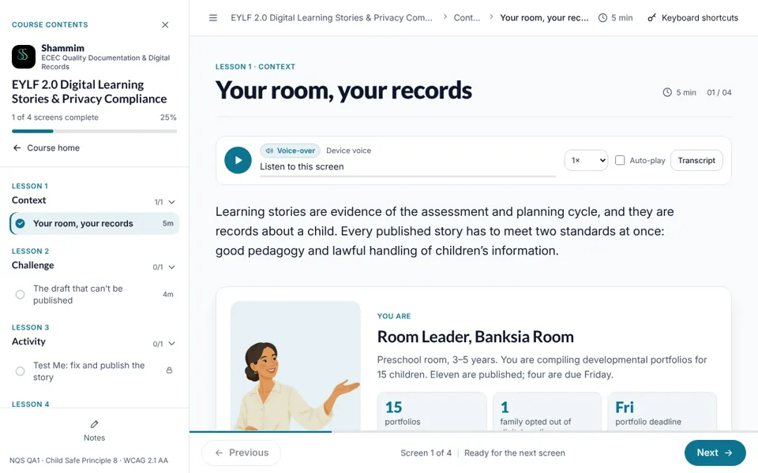

EY-L1-01Lesson opener

Your room, your records
- On screen
- You are the Room Leader, Banksia Room. 15 portfolios, 1 family opted out of digital media, deadline Friday.
- Interaction
- Role card, stat tiles and a short intro to RoomJournal, the simulated platform.
- Audio
- Narrator reads the opener.